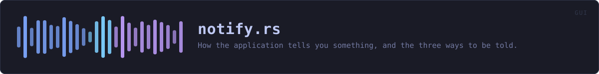

crates/veilvoice-gui/src/notify.rs
veilvoice-gui · 460 lines · read the source here · or on GitHub
How the application tells you something, and the three ways to be told.
Three modes, and none of them is the obviously right one
Style::Overlay draws a rounded, translucent card in the corner of VeilVoice's own window. It is the quiet option: it does not steal focus, it does not interrupt what you are typing, and it fades on its own.
Style::Alert is the loud one. It stops the panel it is on until it is dismissed, so it cannot be missed and it cannot be missed quietly -- which is the point when the thing being reported is that something started recording your screen.
Style::Off shows nothing. It is offered because a monitor that interrupts somebody every thirty seconds is a monitor they switch off at the operating system, and then it is not watching for anything at all. Better a reader who chose silence knowingly than one who disabled the whole feature to get it.
There is no default that suits everybody, so the default is the middle one and the choice is a preference rather than a guess.
The contrast is computed, never assumed
A translucent card is a colour laid over whatever is behind it, so the text on it is legible only if the composited result has enough contrast. Two things follow, and both were got wrong in the first version of this file:
- The background to measure against is the blend, not the card's own tint.
blenddoes that arithmetic, andCard::readable_textmeasures the result with the same WCAG ratiocrate::palettesalready uses on user palettes. - If no candidate reaches the threshold, the card is drawn opaque rather than shipped illegible. Translucency is a nicety; being able to read a warning is not.
What this does not do
It does not raise a system notification, put anything in a tray, or reach outside VeilVoice's own window. Those need per-platform APIs and, on two of the three, a registered application identity -- and this project is published under a pseudonym on purpose. A notification that only appears while the window is open is a real limit, and SCOPE says so rather than letting somebody rely on being told while VeilVoice is closed.
In plain words
When VeilVoice has something to tell you, it can do it three ways: a small rounded box in the corner of its own window that fades away by itself, a message that stops what you are doing until you dismiss it, or nothing at all.
The quiet box is see-through, so the colours behind it change how readable the writing is. Rather than guessing, VeilVoice measures the actual contrast of the result and picks the text colour that comes out clearest -- and if none of them is clear enough, it makes the box solid instead. A warning you cannot read is not a warning.
One honest limit: these only appear while the VeilVoice window is open. It does not put messages into your desktop's own notification area.
WHAT THIS FILE CONTAINS
460 lines defining 12 functions (10 public), 4 types and 4 constants. Everything below is read out of the source, so it cannot disagree with the code.
The types it owns.
enum Styleline 85 — How the application shows a notification.enum Levelline 154 — How serious a notification is.struct Noticeline 164 — One thing to tell the reader.struct Cardline 208 — A card's measured colours: what it is drawn in, and what its text is drawn in, chosen so the result is legible.
What happens when it runs. These are the ways in: public, and nothing else in this file calls them, so they are what an outside caller reaches first.
Style::labelline 97 — A short name, for a picker.Style::noteline 106 — What this choice costs and buys, in the words a front end should show.Style::keyline 131 — The identifier written to the settings file.Style::from_keyline 143 — Read a style back.Notice::noteline 173 — A plain note.Notice::warnline 181 — Something worth acting on.showline 275 — Draw a notice, in whichever way was chosen.
reachesalert,overlay,for_level,blend,readable_text
WHAT CALLS WHAT
The functions this file defines, and the calls between them. An edge means the callee's name appears, called, inside the caller's body — a syntactic reading, not a type-resolved one.
The same graph as Mermaid source
%%{init: {"theme":"base","themeVariables":{"background":"#1a1b26","primaryColor":"#1f2335","primaryTextColor":"#c0caf5","primaryBorderColor":"#7aa2f7","secondaryColor":"#16161e","tertiaryColor":"#16161e","lineColor":"#737aa2","textColor":"#c0caf5","mainBkg":"#1f2335","nodeBorder":"#7aa2f7","clusterBkg":"#16161e","clusterBorder":"#2f3549","fontFamily":"ui-monospace, SFMono-Regular, Consolas, monospace","fontSize":"14px"}}}%%
flowchart TD
n_label(["Style::label<br/>line 97"])
n_note(["Style::note<br/>line 106"])
n_key(["Style::key<br/>line 131"])
n_from_key(["Style::from_key<br/>line 143"])
n_note(["Notice::note<br/>line 173"])
n_warn(["Notice::warn<br/>line 181"])
n_blend["blend<br/>line 195"]
n_for_level["Card::for_level<br/>line 228"]
n_readable_text["Card::readable_text<br/>line 257"]
n_show(["show<br/>line 275"])
n_overlay["overlay<br/>line 284"]
n_alert["alert<br/>line 306"]
n_alert --> n_for_level
n_for_level --> n_blend
n_for_level --> n_readable_text
n_overlay --> n_for_level
n_show --> n_alert
n_show --> n_overlay
click n_label href "https://github.com/tilas01/veilvoice/blob/main/crates/veilvoice-gui/src/notify.rs#L97" "open the source"
click n_note href "https://github.com/tilas01/veilvoice/blob/main/crates/veilvoice-gui/src/notify.rs#L106" "open the source"
click n_key href "https://github.com/tilas01/veilvoice/blob/main/crates/veilvoice-gui/src/notify.rs#L131" "open the source"
click n_from_key href "https://github.com/tilas01/veilvoice/blob/main/crates/veilvoice-gui/src/notify.rs#L143" "open the source"
click n_note href "https://github.com/tilas01/veilvoice/blob/main/crates/veilvoice-gui/src/notify.rs#L173" "open the source"
click n_warn href "https://github.com/tilas01/veilvoice/blob/main/crates/veilvoice-gui/src/notify.rs#L181" "open the source"
click n_blend href "https://github.com/tilas01/veilvoice/blob/main/crates/veilvoice-gui/src/notify.rs#L195" "open the source"
click n_for_level href "https://github.com/tilas01/veilvoice/blob/main/crates/veilvoice-gui/src/notify.rs#L228" "open the source"
click n_readable_text href "https://github.com/tilas01/veilvoice/blob/main/crates/veilvoice-gui/src/notify.rs#L257" "open the source"
click n_show href "https://github.com/tilas01/veilvoice/blob/main/crates/veilvoice-gui/src/notify.rs#L275" "open the source"
click n_overlay href "https://github.com/tilas01/veilvoice/blob/main/crates/veilvoice-gui/src/notify.rs#L284" "open the source"
click n_alert href "https://github.com/tilas01/veilvoice/blob/main/crates/veilvoice-gui/src/notify.rs#L306" "open the source"
classDef entry fill:#1f2335,stroke:#7aa2f7,color:#c0caf5
class n_label,n_note,n_key,n_from_key,n_note,n_warn,n_show entry
classDef api fill:#1f2335,stroke:#7dcfff,color:#c0caf5
class n_blend,n_for_level,n_readable_text api
classDef helper fill:#1f2335,stroke:#bb9af7,color:#c0caf5
class n_overlay,n_alert helperThis site loads no third-party script, so it cannot run Mermaid; the diagram above is the same nodes and edges drawn by the generator instead. GitHub renders the source below directly.
ITEMS
| Item | Line | Documentation |
|---|---|---|
LEAST_CONTRAST pub const | 74 | The smallest contrast ratio a notification's text may have. |
CARD_ALPHA pub const | 81 | How much of the card's own colour shows over what is behind it. |
Style pub enum | 85 | How the application shows a notification. |
Style::label pub fn | 97 | A short name, for a picker. |
Style::note pub fn | 106 | What this choice costs and buys, in the words a front end should show. |
Style::ALL pub const | 128 | Every style, in the order a picker should offer them. |
Style::key pub fn | 131 | The identifier written to the settings file. |
Style::from_key pub fn | 143 | Read a style back. |
Level pub enum | 154 | How serious a notification is. |
Notice pub struct | 164 | One thing to tell the reader. |
Notice::note pub fn | 173 | A plain note. |
Notice::warn pub fn | 181 | Something worth acting on. |
blend pub fn | 195 | Lay over on top of under at alpha, giving the colour actually seen. |
Card pub struct | 208 | A card's measured colours: what it is drawn in, and what its text is drawn in, chosen so the result is legible. |
Card::for_level pub fn | 228 | Work out how to draw a card of this level on this panel. |
Card::readable_text pub fn | 257 | The palette colour that reads best on fill, and its ratio. |
show pub fn | 275 | Draw a notice, in whichever way was chosen. |
overlay fn | 284 | The quiet one: a rounded translucent card. |
alert fn | 306 | The loud one: it stops the panel until acknowledged. |
SCOPE pub const | 324 | What a reader has to be told about these notifications. |